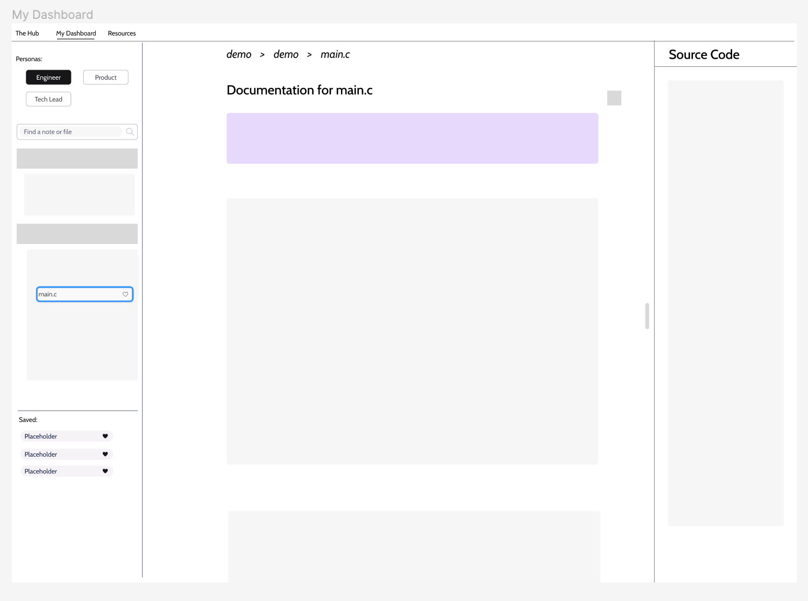

The Problem
DriverAI is a young startup that seeks to use generative AI to create documentation for large codebases. They have only been in operation for a few months and are looking to implement some user feedback that they have received.
For 3 weeks, I worked with a team and DriverAI to create a new method of content organization.
What specifically doesn't work about the old organization?
These are the five pages dedicated to content organization AI-generated document. The previous design requires users to be familiar and confident with all of the layers. Here were some of the problems we identified with the current scenario:
- Heavily nested design.
- Unclear terminology - "codebases" vs "workspaces"
- No central work area
- Too much detail for some personas - Product Managers vs Software Engineers
- Sparse Resource Page
- Monochromatic design
After discussing these points with the founding engineer, we decided to focus on the first five as the monochrome theme was constant throughout the entire company.
In addition to the points we had raised, user feedback revealed that users struggle to know they can edit the generated documents and can view their code next to the documents.
Getting into the Driver's Seat
Now, my team and I sat down and drafted a few sketches. Each of us generated two completely new user flows.
I tried to create one more grounded workflow, so the other could be more experimental.
For this first round, I specifically focused on generating new ways to interact with the existing technology.
Here I started to think about new ways to prompt the user to know that they could directly edit the documents and see the code.
A peer of mine created the sketches on the right, which inspired me to consider a dynamic sidebar system to help reduce nesting. I then chose to specifically redesign the page that was formerly called tech docs. I decided that this page would be combined with the hub to serve as a central workplace for a user.
I called this new page "The Dashboard." Here, users would be able to view both generated technical documentation but also generated notes—like startup guides or system breakdowns. I wanted to have the user view both of these on a single page because users both are fundamental to the work needs of users. While they were on separate pages, users reported frequently jumping around, so it made sense to remove this pain point.
With these details, I began working on my low fidelity designs.
Starting the Journey
I created this low fidelity mockup in Figma. On the left, is a modified navigation bar. Previously, this was just a nested tree and search bar to find for technical documents. I had included a new section at the bottom for saved documents/notes, so users can quickly access their most frequently used pages. I also had placed the notes tree above the code tree, so users could now find both documents using the familiar structure. I added a new section at the top where the user could swap personas. This way the technical document would change depending on who was viewing the page to best meet their needs.
In the center, I kept the document largely unchanged. However, I did add a small button on the top right where users could click to edit the document. This would just help users know that they can directly modify the generated technical documents and notes.
On the right, I had the source code be open by default. It is still collapsible, but this way users can better understand DriverAi's features.
Side by Side
Re-Routing
With my wireframes created, I wanted to reach out to our stakeholders and get feedback on my designs. From this conversation, I learned that the stacked navigation trees would not work because some users have thousands of documents. I also got the feedback that the select persona button probably could be placed within a profile, rather than on the documents themselves.
With this feedback, I created a revised version of my low fidelity mockups.
Original and Revised
Here, the most significant change is the addition of a toggle between the code and notes navigation tree. I also moved the favorite section up to the top to reflect the high priority of the section.
Pit Stop
At this point, I created a style guide to help me better understand the brand identity before I began the high fidelity mockups.
I largely reverse-engineered this style guide from the current DriverAI website. Specifically, both the color gradation and font were directly taken from the original page. However, I did create the button, chip, and banner components to fit the demands of my new page.
Arriving at Our Destination
This is the demo of my redesign of the tech docs page. The notable changes from the revised low fidelity are the inclusion of a button between the document and source code that will allow the user to quickly swap which section is on the left and right.
In the video below, you can also see the left-hand dynamic that my peers designed directly implemented with mine. This has replaced the codebases and workspace systems and helps users to quickly swap between projects as they work.